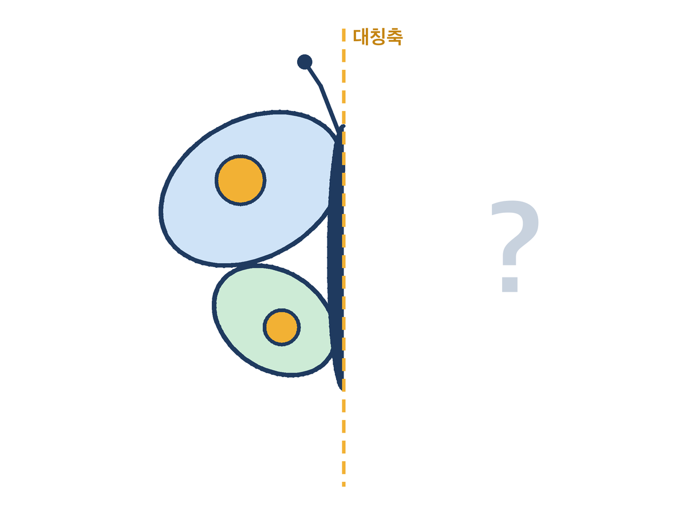
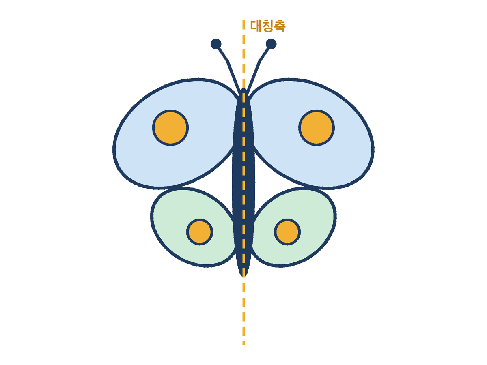
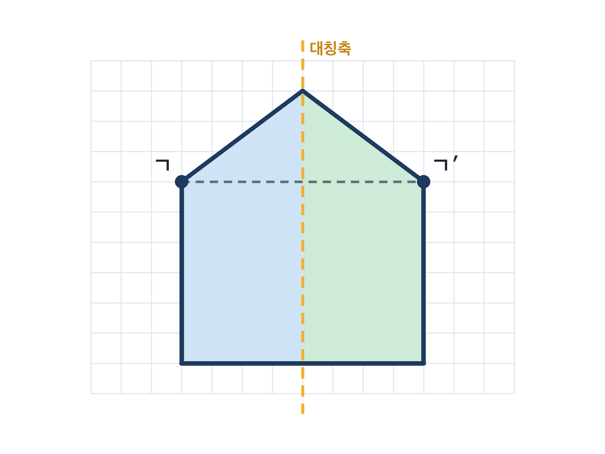
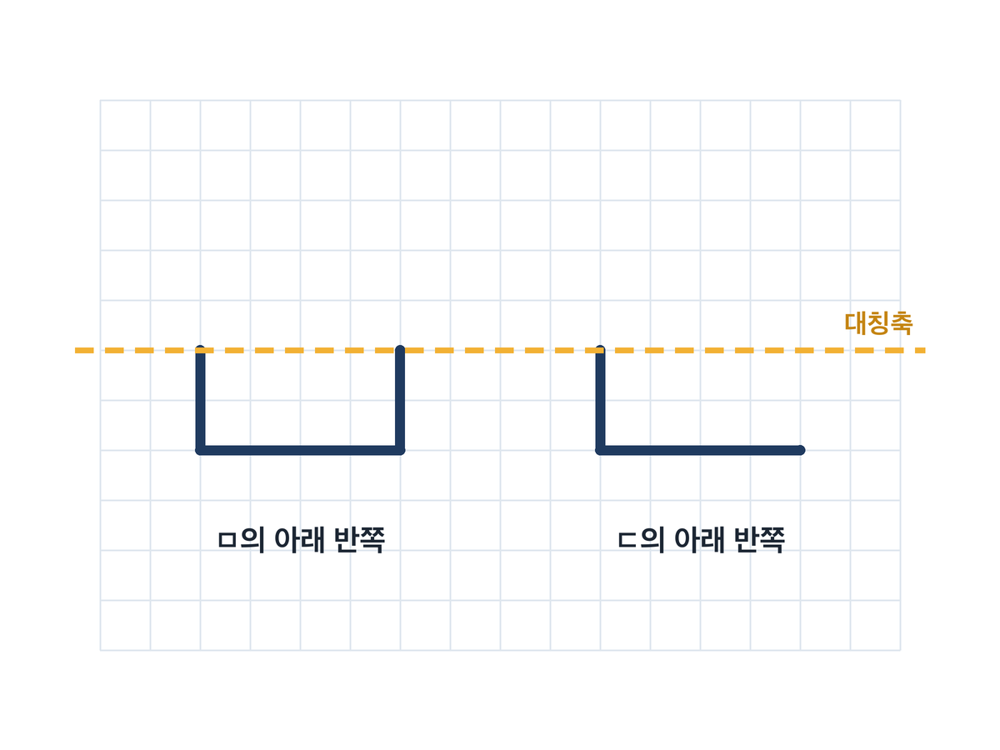
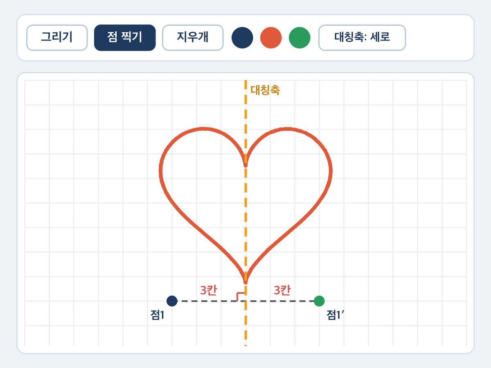

3편 · 거울 그림판 — 선대칭도형의 비밀을 찾아라
비상 수학 5-2 3단원 합동과 대칭 · 선대칭도형과 그 성질 · 40분 · 2026-10-25 게시
거울 그림판 열기 →태블릿·PC 브라우저에서 바로 열립니다. 로그인 없음 · 아무것도 저장하지 않음
학습 목표
- 한 직선을 따라 접었을 때 완전히 겹치는 도형을 선대칭도형, 그 직선을 대칭축이라 부를 수 있다.
- 거울 그림판으로 대응점을 찍어 보며 선대칭도형의 성질 세 가지(대응변의 길이와 대응각의 크기가 같다 · 대응점을 이은 선분은 대칭축과 수직으로 만난다 · 대칭축은 그 선분을 둘로 똑같이 나눈다)를 스스로 찾아 말할 수 있다.
설계 의도
선대칭의 성질 세 가지는 교과서에 글로 적혀 있지만, 아이들에게는 "접으면 겹친다"는 감각과 "대칭축까지 거리가 같다·수직이다"라는 측정 언어 사이에 다리가 없습니다. 그래서 이 수업은 성질을 먼저 말해 주지 않고, 한쪽에 그리면 반대쪽이 실시간으로 비치는 '거울 그림판'을 쥐여 줍니다.
점을 하나 찍으면 대응점이 생기고, 대칭축까지의 거리와 만나는 각이 화면에 바로 숫자로 보입니다. 아이들은 점을 여기저기 찍어 보며 "거리가 항상 같네", "항상 직각이네"를 자기 손으로 발견해 활동지에 적고, 그다음 읽는 교과서 문장은 그 발견의 이름이 됩니다.
AI의 역할은 '코딩 파트너'입니다. 거울 그림판은 교사가 제미나이 캔버스(바이브코딩)로 만든 도구이고, 아래 프롬프트 카드를 넣으면 어느 교사든 같은 도구를 다시 만들 수 있습니다. 1편(문제를 만드는 AI) → 2편(틀릴 수 있는 AI) → 3편(교사의 도구를 만들어 주는 AI)으로 AI의 자리가 옮겨 갑니다. 도형 그림은 1·2편과 같은 이유로 코드로 정확히 그렸습니다.
40분 흐름
| 분 | 단계 | 교사 | 학생 | 자료 |
|---|---|---|---|---|
| 0~5 | 도입 '반쪽 나비' | 세로선 왼쪽에만 그려진 나비 반쪽을 띄우고 "오른쪽은 어떻게 생겼을까?" 손으로 허공에 그려 보게 함. 완성 나비를 보인 뒤 "접으면 겹칠까?" 투표 | 상상해서 손으로 그리기, 투표 | 덱 |
| 5~15 | 개념 AIDT 접어서 겹치기 | AIDT 선대칭도형 차시에서 도형을 접어 겹치는 조작으로 선대칭도형·대칭축 명명. 대칭축이 여러 개인 도형(정사각형)도 한 번 보여 주기 | 태블릿에서 접기 조작, 대칭축 찾기 | 비상 AIDT, 덱 |
| 15~35 | 활동 거울 그림판 탐구 (2인 1태블릿) | 1단계 놀이(3분): 그려서 반대쪽이 비치는 것 보기. 2단계 탐구(10분): '점 찍기'로 점 3개, 대칭축까지 거리와 만나는 각을 활동지에 기록 → "항상 같다 / 항상 90°" 발견. 3단계 미션(7분): 격자 켜고 대칭축 가로, ㅁ·ㄷ의 아래 반쪽을 그려 비친 모양까지 합친 글자 확인 → "그럼 ㄴ도 될까?" | 그리기·점 찍기·기록·비교, 미션 완성 | 거울 그림판, 활동지 |
| 35~40 | 정리 AIDT 평가 + 성질 한 줄 | 발견한 것을 교과서 문장과 맞춰 보기. AIDT 형성평가 2~3문항. "대응점을 이은 선분은 대칭축과 ___으로 만나고, 대칭축은 그 선분을 ___로 똑같이 나눈다" 빈칸 | 개별 평가, 한 줄 정리 | AIDT, 덱 |
내려받기
- 수업 덱 (PPTX)12장 · 고쳐 쓰기용
- 수업 덱 (PDF)12장 · 바로 띄우기용
- 활동지 (PDF)A4 앞뒤 · 모둠당 1장
- 교사용 흐름 (PDF)흐름표 · 정답 · 프롬프트
프롬프트 카드 (교사용 · 제미나이 캔버스로 거울 그림판 다시 만들기)
거울 그림판 만들기
초등학생이 태블릿에서 쓰는 '거울 그림판' 웹앱을 HTML 한 파일로 만들어 줘. 화면 가운데 세로 대칭축이 있고, 한쪽에 손가락으로 그리면 반대쪽에 실시간으로 대칭이 되게 똑같이 그려져. 버튼: 그리기/점 찍기/지우개 모드, 대칭축 세로·가로 전환, 격자 켜기, 전부 지우기, 색 3가지. '점 찍기' 모드에서는 점을 찍으면 대응점이 생기고 두 점을 점선으로 잇고, 대칭축과 만나는 곳에 직각 표시를 하고, 양쪽 점에서 대칭축까지의 거리를 격자 칸 수로 보여 줘. 점은 격자에 맞춰 찍혀. 외부 라이브러리 없이, 아무것도 저장하지 않게, 버튼 글자는 크게.
생성 결과를 열어 반사가 정확한지(대칭축을 기준으로 양쪽 거리가 같은지) 교사가 먼저 '점 찍기'로 확인한다. 어긋나면 "대칭축 기준으로 x좌표를 뒤집어 줘"라고 한 줄 더 요청한다. 만들어 둔 완성본은 위 '거울 그림판 열기'.
그림




